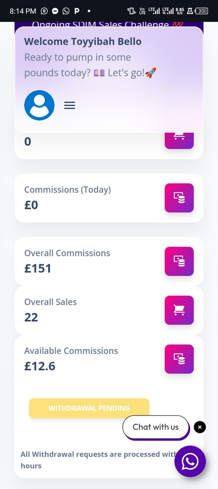
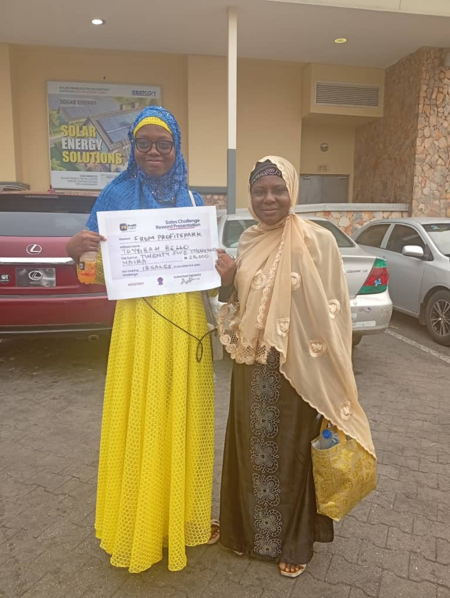
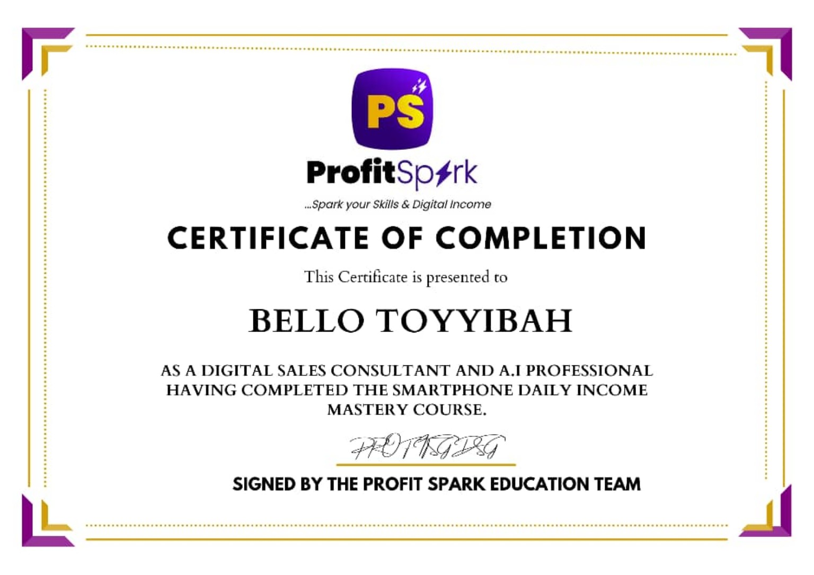
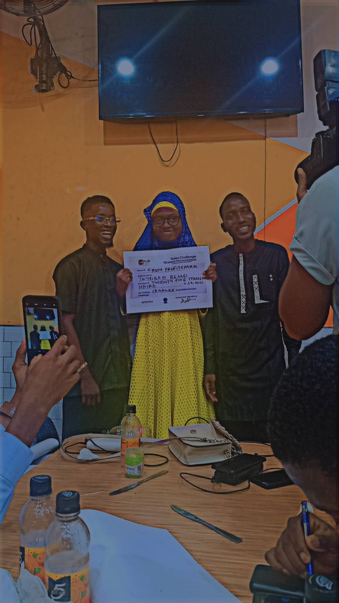

Sales performance dashboard
My dashboard records 22 overall sales and £151 in overall commissions. This is a cumulative snapshot, separate from my 13-sales-in-72-hours achievement.
Hi, I'm Toyyibah Bello. I have hands-on experience generating leads, building trust, handling objections, and closing sales. Now I'm bringing those skills into appointment setting—focused on quality conversations, consistent follow-up, and helping sales teams win.
I started in digital marketing and independent affiliate sales, managing the journey from first contact to purchase. I funded my own advertising, engaged prospects through WhatsApp DMs, used voice notes and calls where useful, and followed up to help people make informed decisions.
Within my first month, I closed 13 sales in 72 hours and received recognition through a sales challenge. I haven't held a formal appointment-setting position yet, but I've invested in learning the role and understand the importance of qualifying leads before booking calls.
Hands-on experience running paid advertising and engaging incoming leads.
WhatsApp conversations, follow-ups, objection handling, voice notes, and calls.
Independent closing experience and recognition in a sales challenge.
A selection of records and recognition from my independent sales experience. These are sales results—not claims of prior formal appointment-setting employment.

My dashboard records 22 overall sales and £151 in overall commissions. This is a cumulative snapshot, separate from my 13-sales-in-72-hours achievement.

Recognition received for my sales performance. Closing 13 sales within 72 hours helped me win a sales challenge.

ProfitSpark certificate of completion in digital sales consulting and AI-related skills.

Another moment from the sales challenge award presentation.
I believe a strong setter does more than fill a calendar. The goal is to make conversations useful for both the prospect and the closer.
Build rapport, listen carefully, and understand what the prospect is trying to solve.
Ask thoughtful questions to understand fit, need, and genuine interest.
Respond to objections with clarity and empathy, without being pushy.
Keep accurate records and follow-up reminders so interested prospects aren't forgotten.
Share relevant context with the closer so each booked call starts well.
I've studied sales principles from Brian Tracy and appointment-setting material through communities associated with Chris Kavanagh and Monzer Alyaghan. My learning includes qualification, DM setting, follow-ups, objections, CRM concepts, and booking qualified appointments.
I'm coachable, comfortable receiving feedback, and motivated to keep improving.
My Loom introduction explains my sales background and what I'd bring to an appointment-setting team.
Watch the Loom ↗I'm exploring remote DM setting and appointment-setting opportunities where I can contribute, learn, and grow.
Contact email will be activated once you replace YOUR_EMAIL_HERE in the site file.